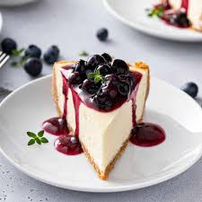

Blueberry Cheesecake

About Cheesecake
A rich and creamy blueberry cheesecake featuring a buttery graham cracker crust, a smooth cheesecake filling, and a vibrant blueberry topping. Perfectly balanced with sweetness and tang, this dessert is ideal for any occasion! 🫐
Ingrediants
- 1 ½ cups Graham Cracker Crumbs
- 1/3 cup Butter
- 1 cup Sugar
- 2 Eggs
- 1 ½ cups Cream Cheese
- 2/4 cup Heavy Cream
- 1/2 tsp Vanilla Extract
- 1 ½ cups Frozen Blueberries
- 1 tbs Lemon Juice
- 1 tbs Cornstarch diluted in water
Steps
- Mix graham cracker crumbs, melted butter, and sugar in a bowl until evenly combined.
Press the mixture into the bottom of a springform pan (9 inches/23 cm) to form an even crust.
Bake the crust for 10 minutes, then set it aside to cool.
- eat the softened cream cheese and sugar in a bowl until smooth and creamy.
Add the eggs one at a time, mixing well after each addition.
Mix in the vanilla extract, sour cream, and heavy cream until fully incorporated.
Pour the cheesecake filling over the cooled crust and smooth the top.
- Combine blueberries, sugar, and lemon juice in a saucepan over medium heat.
Cook until the blueberries release their juices and the mixture starts to bubble.
Stir in the cornstarch-water mixture and simmer until thickened, about 2–3 minutes.
Let the topping cool completely before spreading it over the chilled cheesecake.